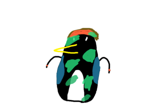
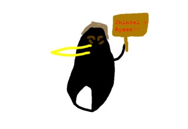
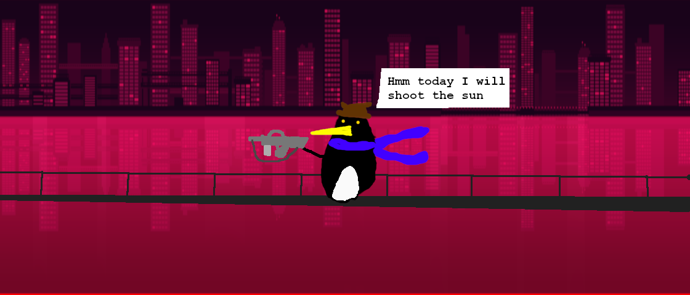
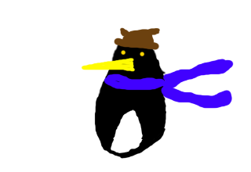
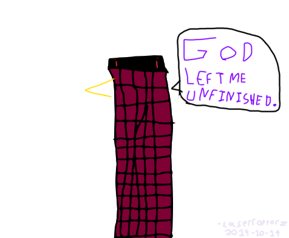
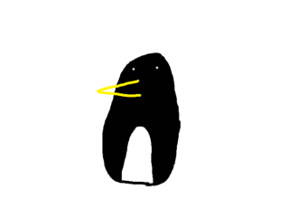
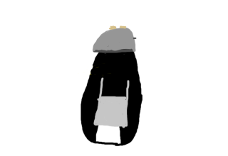

THIS IS TEMPORARY.

This is the OK K.O! Penguin. I made this because Circleen told me to. I'm sorry
for your loss. 2019-08-27

Linus Tech Tips
penguin. I'm not sorry. 2019-08-20

The first and
only [as of writing this] penguin meme I did. Before I get spammed on Discord,
that's an M16 and not a FAMAS. 2019-08-22

Niko Hello
Penguin. Because nearly all of these penguins are based off of OneShot.
2019-08-19

OneShot Refuge Catwalk Penguin. Context - Someone in the OneShot RP Server
mentioned this and I made it for a joke. 2019-10-18

Template
Hello Penguin. Niko and Linus pengs were actually using a custom penguin body I
made every time I wanted to make a penguin.
This became a problem fast,
because I'm terrible at drawing so it was really inconsistent. Solution - make a
template .sai penguin that I load
into Paint Tool SAI and just edit to make a
penguin. I n t e l l e c t . 2019-08-21

Toaster
Guy Penguin. I made it for someone on Twitter. 2019-08-21
I don't do
penguins much, but I'll probably update this if it's good enough to get on here.
-LaserRaptorz 2019-11-09
Go back.
This site is owned by Circleen and LaserRaptorz. Contact us here.